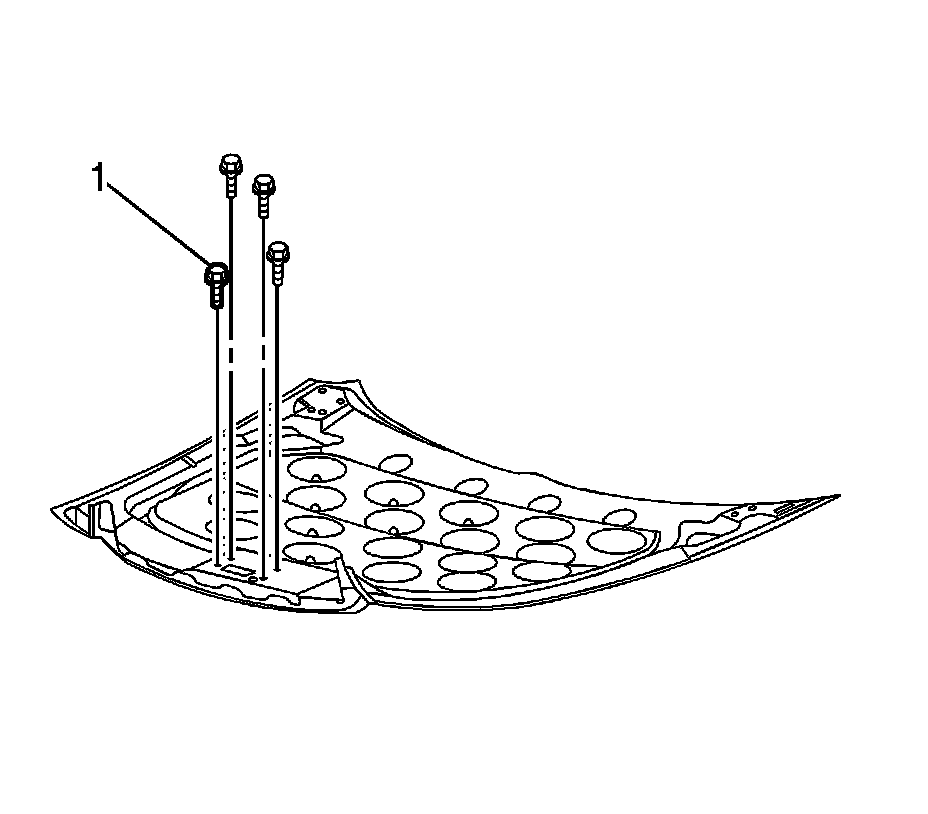

Hood Primary Latch Striker Replacement
Hood Primary Latch Striker Replacement
The primary hood latch striker is not serviceable separately from the hood. If the hood striker is damaged, the hood must be replaced. The hood striker bolts must be reused, or if damaged replaced with new hood striker bolts. If the hood and/or striker needs to be replaced, refer to Hood Replacement (Service and Repair) .

Notice: Refer to Fastener Notice (Fastener Notice) .
Install the fasteners (1) in order to secure the hood striker (2) to the hood.
Tighten the fasteners to 9 N.m (80 lb in).